01 - Opening Thesis · product pillars and proof metrics
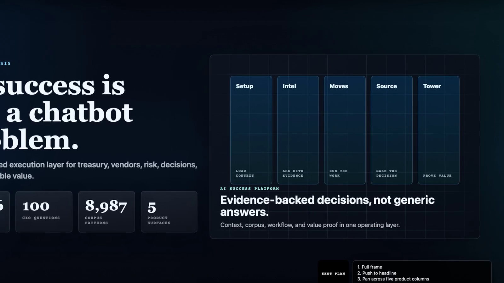
02 - Lakeshore Operating Profile · planning profile metrics and company cards
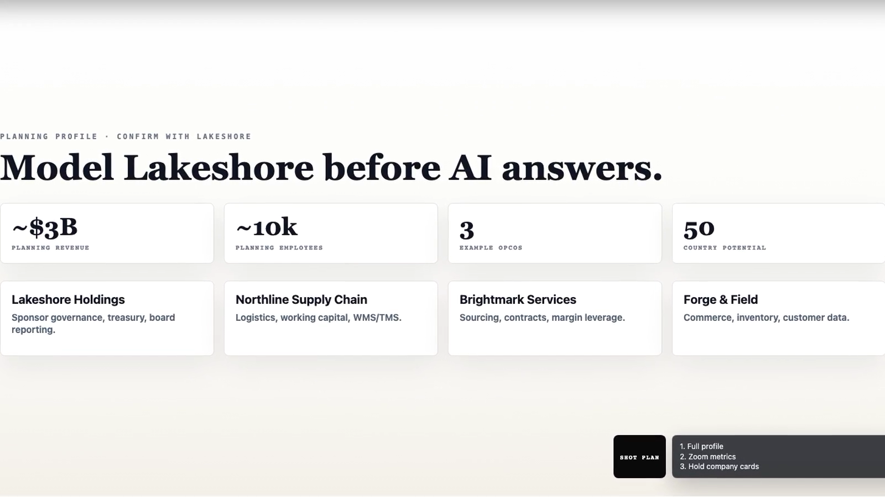
03 - Federated Complexity · federated operating map
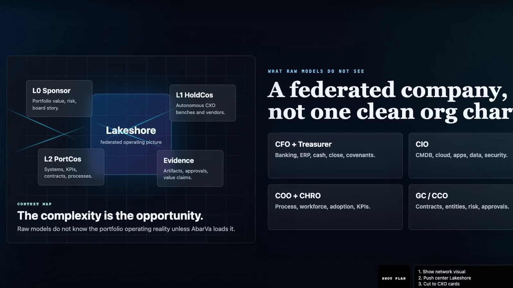
04 - Lakeshore Intelligence Layer · context to value bridge
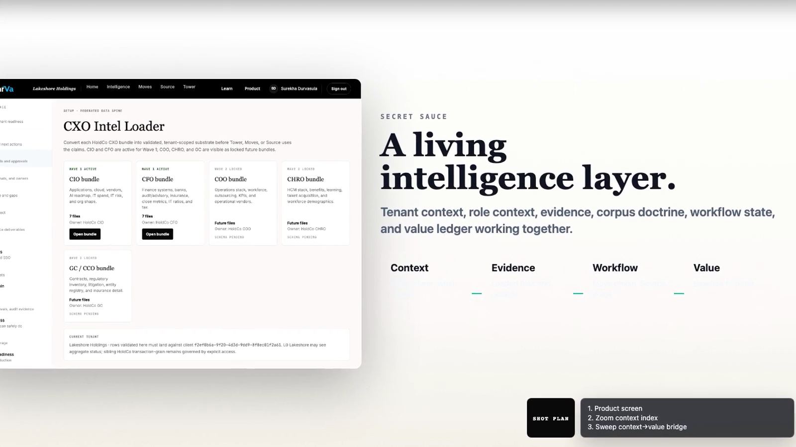
05 - Editable Corpus Doctrine · editable corpus actions
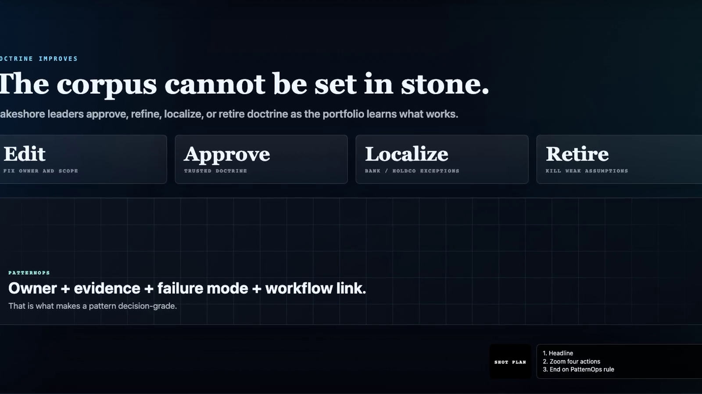
06 - Kyriba And Treasury Wedge · six treasury readiness gates
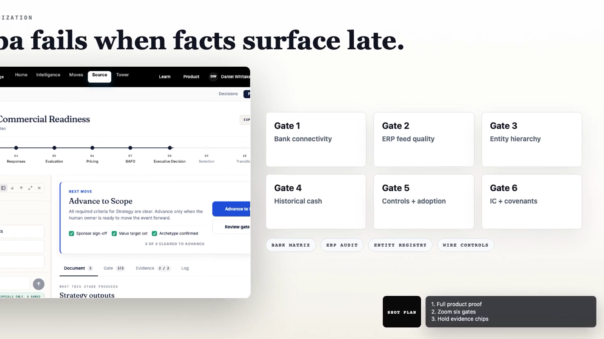
07 - Beyond Kyriba · five value lanes
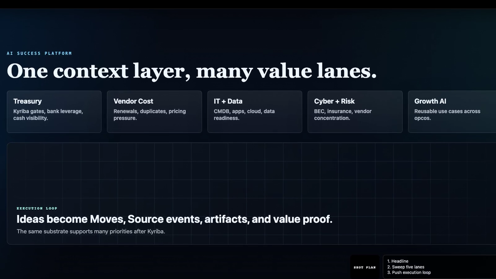
08 - $500K Value Case · value metrics and value bridge
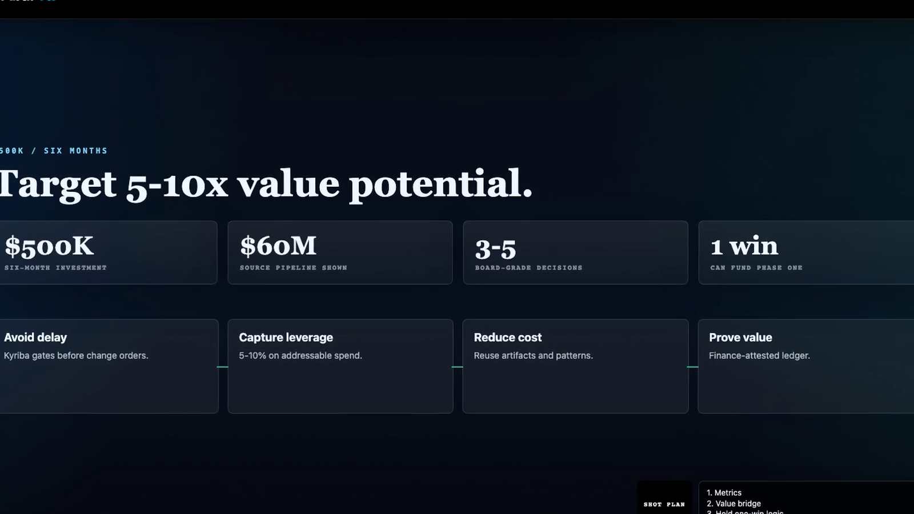
09 - Move Execution Proof · Move product screen and ownership cards
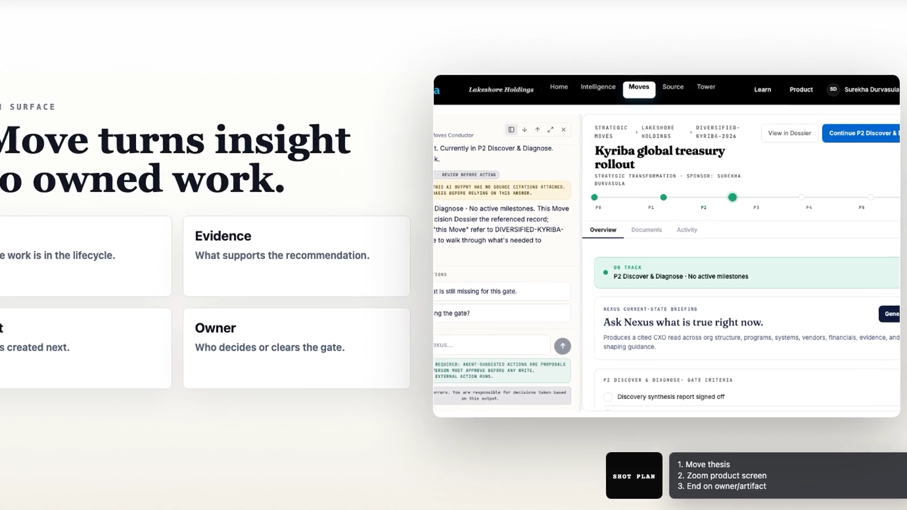
10 - Source Decision Proof · executive decision fork
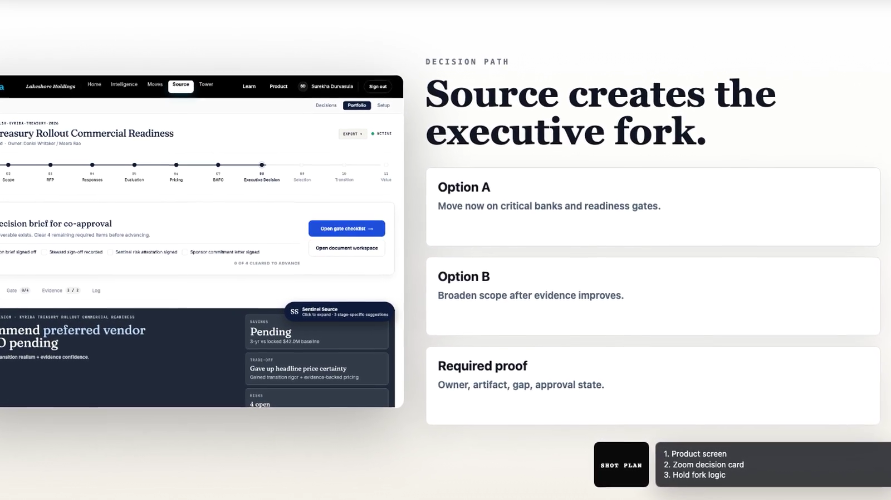
11 - Value Pipeline Proof · forecast to proof controls
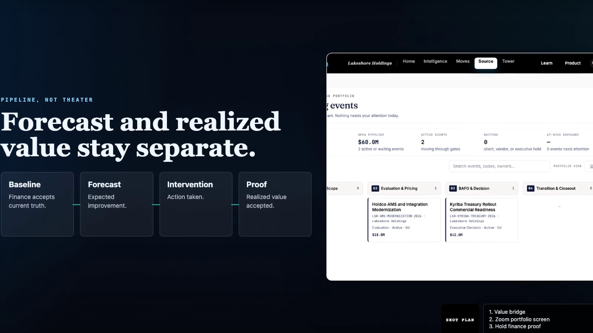
12 - Architecture Trust Layer · trust controls around Claude
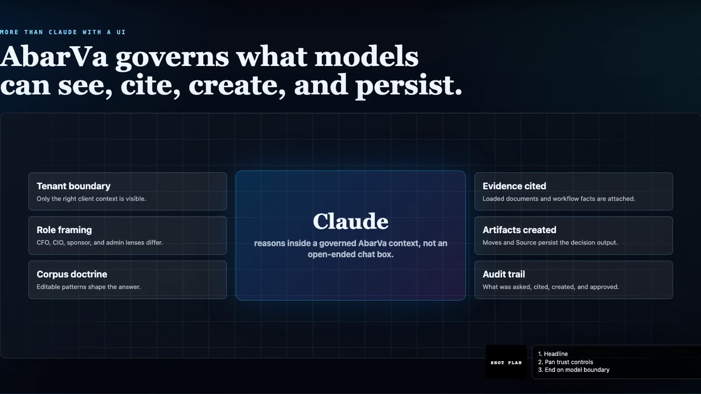
13 - Six-Month Roadmap · six-month roadmap cards
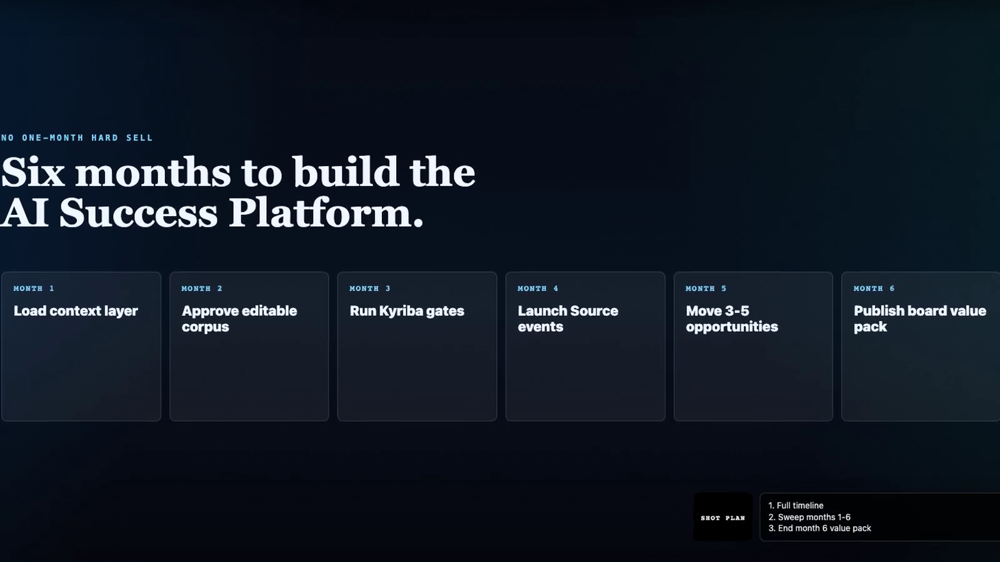
14 - Renewal Standard · coverage proof ROI cards
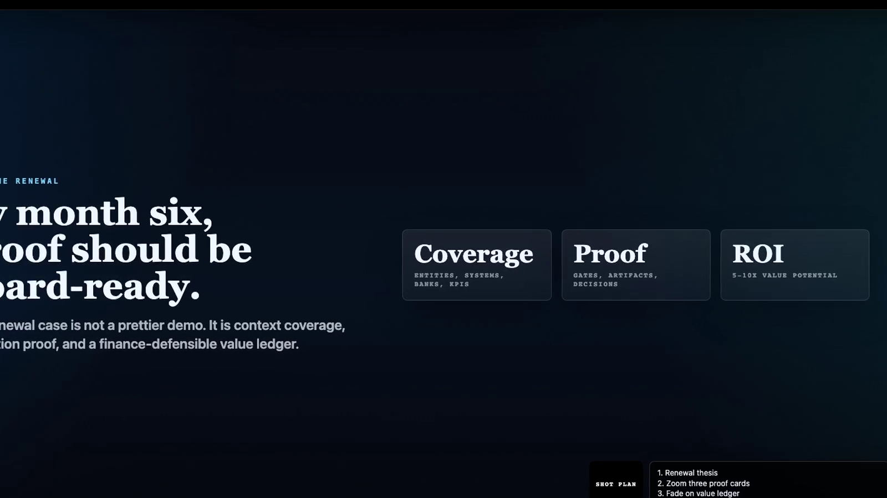